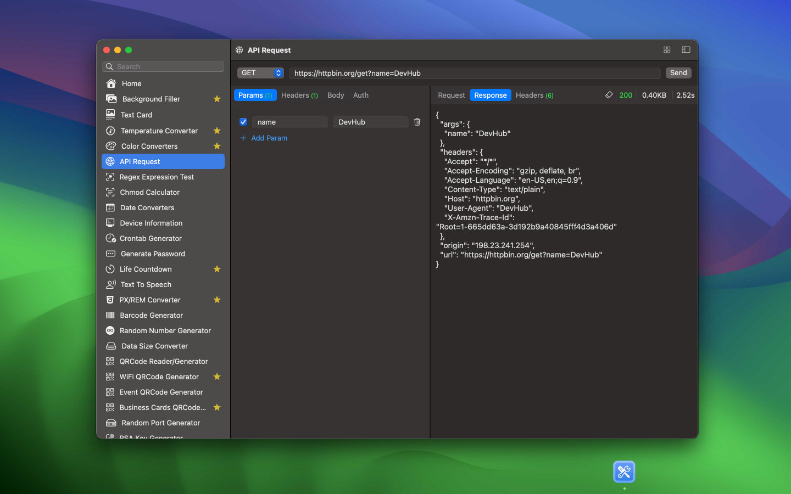

最低操作系统要求：macOS 14.0
一个功能丰富的离线应用程序，经过精心打造，旨在支持开发人员的日常任务，并确保其数据的最高安全性。
我正在积极开发中，并树立了一个大胆的目标：每周发布更新。我努力保持紧凑的足迹，旨在策划一个包含100多个小工具的广泛集合，为开发人员提供多样化的工具。这一举措体现了我对持续提升的承诺，提供丰富的工具，以赋能开发人员。DevHub不仅仅是一个编码伴侣；

已完成的工具如下：



与 DevHub 的集成是通过 URL Scheme 完成的。您可以使用此功能与大多数应用程序和工作流集成。例如与 Raycast 集成：

URL Scheme
DevHub 支持各种命令和参数，允许您通过 URL 激活该工具。例如，您也可以像这样在链接中使用它（例如在 HTML 页面中）：
<a href="devhub://qrCodeEventGenerator">点击这里</a>
或者从 Terminal.app / CLI 中：
# 在 Terminal.app 或 bash 中输入：
open "devhub://qrCodeEventGenerator"
或者将此复制到您的浏览器地址栏中，然后按 Enter 键： devhub://qrCodeEventGenerator